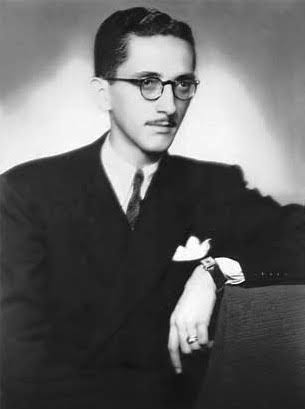

Teófilo Dias
1854 – 1889 • Paranaguá, Paraná, Brasil
Teófilo Dias de Miranda foi um poeta, advogado e jornalista brasileiro, amplamente reconhecido como o introdutor oficial do Parnasianismo no Brasil. O marco inicial do movimento ocorreu em 1882, com a publicação da sua obra poética Fanfarras, que surpreendeu o público e a crítica com a introdução do rigor formal, do vocabulário culto e do culto à estética parnasiana francesa em solo brasileiro.
Principais Obras
Temas Recorrentes
A exaltação da natureza tropical, o rigor estético, a valorização da forma pura, a descrição de objetos e paisagens, além de composições marcadas pela precisão rítmica e pelo distanciamento do sentimentalismo romântico.
Características de Escrita
Uso rigoroso da métrica tradicional, preferência por versos decassílabos e alexandrinos, busca pela rima rica e rara, e uma linguagem sóbria e polida que inaugurou oficialmente os preceitos parnasianos no Brasil antes mesmo da consolidação da "Tríade Parnasiana".
Influências Artísticas
Inspirou-se diretamente nos poetas do Parnasianismo francês (como Leconte de Lisle e Théophile Gautier) e na literatura clássica, rompendo com o tom confessional e piegas do Romantismo que ainda dominava a poesia brasileira no início da década de 1880.
"O verso é a estátua que se esculpe a ferro e fogo, na busca incessante da beleza plástica e perfeita."